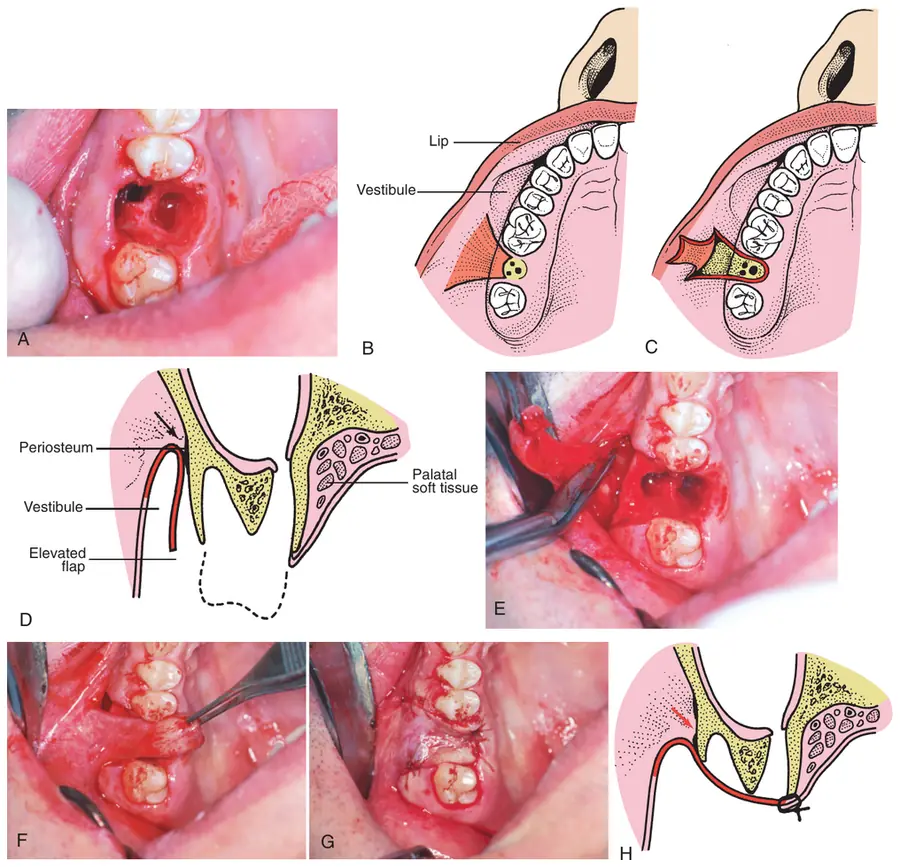

نسخه استخراجشده؛ ترجمه یا تأیید علمی انجام نشده است. وضعیت: captured
برداشتن پرمولرها یا مولرهای ماگزیلا گاهی به ارتباط میان حفرهی دهان و سینوس ماگزیلا میانجامد.

سه شرطی که این احتمال را میسازند: اگر سینوس ماگزیلا بهشدت پنوماتیزه باشد، اگر استخوان کم یا هیچ استخوانی میان ریشههای دندان و سینوس نباشد، و اگر ریشههای دندان بهشدت واگرا باشند — در این حالت شایع است که بخشی از کف استخوانی سینوس همراه دندان برداشته شود، یا حتی بدون بیرون آمدن استخوان، یک ارتباط ایجاد شود.
و شایعترین سناریوی بالینی، دقیقتر: پرفوراسیون سینوس در اثر کشیدن دندان بیش از همه وقتی رخ میدهد که یک مولر ماگزیلا با ریشههای بهشدت واگرا که مجاور فضاهای بیدندان است، نیاز به کشیدن دارد. در این حالت محتمل است که سینوس به داخل زائدهی آلوئولار بیدندان اطراف دندان پنوماتیزه شده باشد، که کل آلوئول را ضعیف میکند و آپکس دندان را به رابطهی نزدیکتری با حفرهی سینوس میآورد.
و چهار علت دیگر پرفوراسیون: تخریب کف سینوس با ضایعات پریاپیکال، سوراخ کردن کف و پردهی سینوس با استفادهی نسنجیده از ابزار، راندن یک ریشه یا دندان به داخل سینوس حین تلاش برای برداشتن، و برداشتن ضایعات کیستیک بزرگی که به حفرهی سینوس تجاوز کردهاند.
پیشگیری: بهترین درمان یک اکسپوز بالقوهی سینوس، پرهیز از خودِ مشکل است، از راه مشاهده و طرحریزی درمان دقیق.
و کلیشه چه چیزی را آشکار میکند؟ ارزیابی رادیوگرافیهای باکیفیت پیش از جراحی معمولاً وجود یا نبود یک سینوس بیش از حد پنوماتیزه، یا ریشههای بهشدت واگرا یا دیلاسره را آشکار میکند — ریشههایی که پتانسیل ایجاد ارتباط با سینوس یا ایجاد شکستگی در کف استخوانی آنتروم حین برداشتن را دارند.
و اگر این یافتهها دیده شدند، جراحی تغییر میکند: ممکن است جراحی طوری تغییر یابد که دندان سکشن و ریشهبهریشه برداشته شود. و بهصورت چکلیست پیشگیری: معاینهی کامل رادیوگرافیک پیش از عمل انجام بده، زود سراغ کشیدن جراحی برو و ریشهها را سکشن کن، از فشار آپیکالی بیش از حد روی دندانهای خلفی ماگزیلا پرهیز کن.
تشخیص ارتباط دهانی-سینوسی به چند راه ممکن است.
راه اول — و سادهترین: به خودِ دندان نگاه کن. اگر بخشی از استخوان به انتهای ریشههای دندان چسبیده باشد، جراح باید فرض کند که ارتباطی میان سینوس و دهان وجود دارد. و یک هشدار مهم: اگر استخوان کمی یا هیچ استخوانی به مولر نچسبیده باشد، باز هم ممکن است ارتباط وجود داشته باشد.
راه دوم — آزمون فوت کردن از بینی. بعضی استفاده از آزمون فوت کردن از بینی را برای تأیید وجود ارتباط توصیه میکنند. روش: سوراخهای بینی بیمار با فشار انگشتان بسته میشوند و از بیمار خواسته میشود بهآرامی از بینی فوت کند، در حالی که جراح ناحیهی کشیدن دندان را نگاه میکند. اگر ارتباطی وجود داشته باشد، هوا از میان ساکت دندان عبور میکند و خون در ناحیهی ساکت حباب میزند.
ولی این آزمون یک عیب جدی دارد: اگر ارتباطی وجود نداشته باشد، فوت کردن پرزور از این نوع خطر ایجاد یک ارتباط را دارد. به همین دلیل است که بسیاری از جراحان معتقدند مانور فوت کردن از بینی نباید در این شرایط به کار رود.
و حالا برآورد اندازه — بدون پروب کردن: پس از تشخیص یا سوءظن قوی، جراح باید اندازهی تقریبی ارتباط را حدس بزند، چون درمان به اندازهی دهانه بستگی دارد. و روش این حدس، هوشمندانه غیرمستقیم است:
و پروب کردن ممنوع است، به دو دلیل:
اصل کلی: وقتی اکسپوز و پرفوراسیون سینوس رخ میدهد، در ابتدا کمتهاجمیترین درمان اندیکاسیون دارد. و درمان به اندازهی دهانه بستگی دارد. سه بازهی اندازه وجود دارد.
بازهی ۱ — کوچک (۲ میلیمتر یا کمتر):
بازهی ۲ — متوسط (۲ تا ۶ میلیمتر): تدابیر اضافی باید به کار روند:
بازهی ۳ — بزرگ (۷ میلیمتر یا بیشتر): جراح باید ترمیم ارتباط سینوسی با یک عمل فلپ را در نظر بگیرد. و این معمولاً میطلبد که بیمار به جراح دهان و فک و صورت ارجاع داده شود، چون ساختن فلپ و بستن یک دهانهی سینوسی، اعمال پیچیدهایاند که آموزش و تجربهی ویژه میخواهند.
و پرکاربردترین فلپ برای بستن این دهانهها، فلپ باکال است: این تکنیک بافت نرم باکال را متحرک میکند تا دهانه را بپوشاند و یک بستن اولیه فراهم کند. و باید هرچه زودتر انجام شود، ترجیحاً همان روزی که دهانه ایجاد شده است.
احتیاطهای سینوسی — هدف و مصادیق: احتیاطهای سینوسی برای پیشگیری از افزایش یا کاهش فشار هوای سینوس ماگزیلا هستند، فشاری که میتواند لخته را جابهجا کند. به بیمار توصیه میشود: از فین کردن بینی پرهیز کند، عطسهی شدید نکند، با نی چیزی نمکد، و سیگار نکشد. و افزون بر این: هنگام عطسه دهانش را باز کند و این احتیاطها را ۱۰ تا ۱۴ روز رعایت کند.
و پیگیری: بیمار در فواصل ۴۸ تا ۷۲ ساعت پس از عمل ویزیت میشود، و به او دستور داده میشود در صورت آشکار شدن ارتباط دهانی-سینوسی — بهصورت نشت هوا به دهان یا مایع به بینی — یا در صورت بروز علائم سینوزیت ماگزیلا، مراجعه کند.